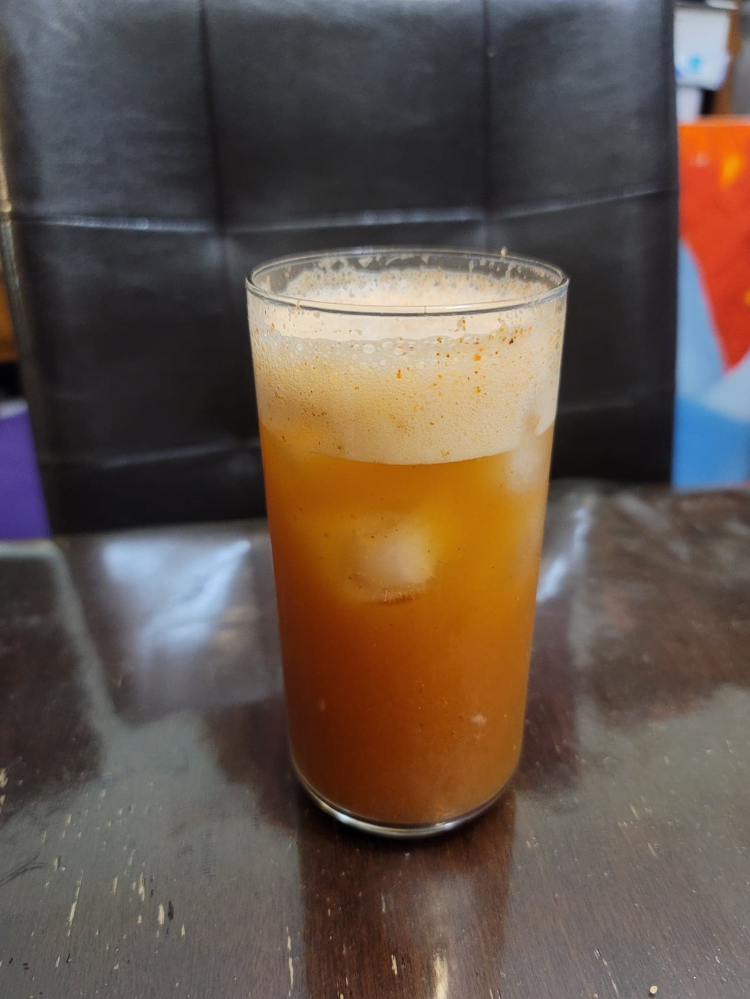

Jujube Longan Goji Kombucha

Ingredients:
- 4 cups Kombucha, after 1st fermentation
- 60 g Jujubes
- 30 g Dried longans
- 15 g Goji berries
Instructions:
- Finely mince all of the dried ingredients. Divide equally into 2 16 oz flip-top bottles. Then fill the bottles with the kombucha. Let ferment for 3-7 days in a dark, warm location, or until carbonated to preference. Then transfer to a fridge until chilled.
- To serve, strain out the solids and pour over ice.